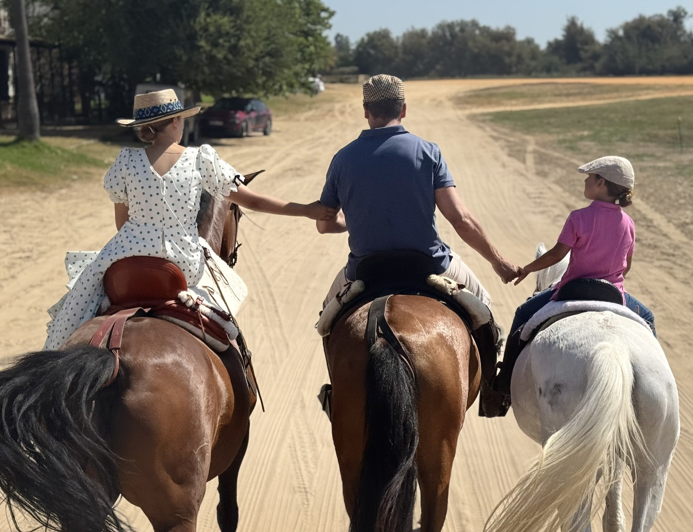
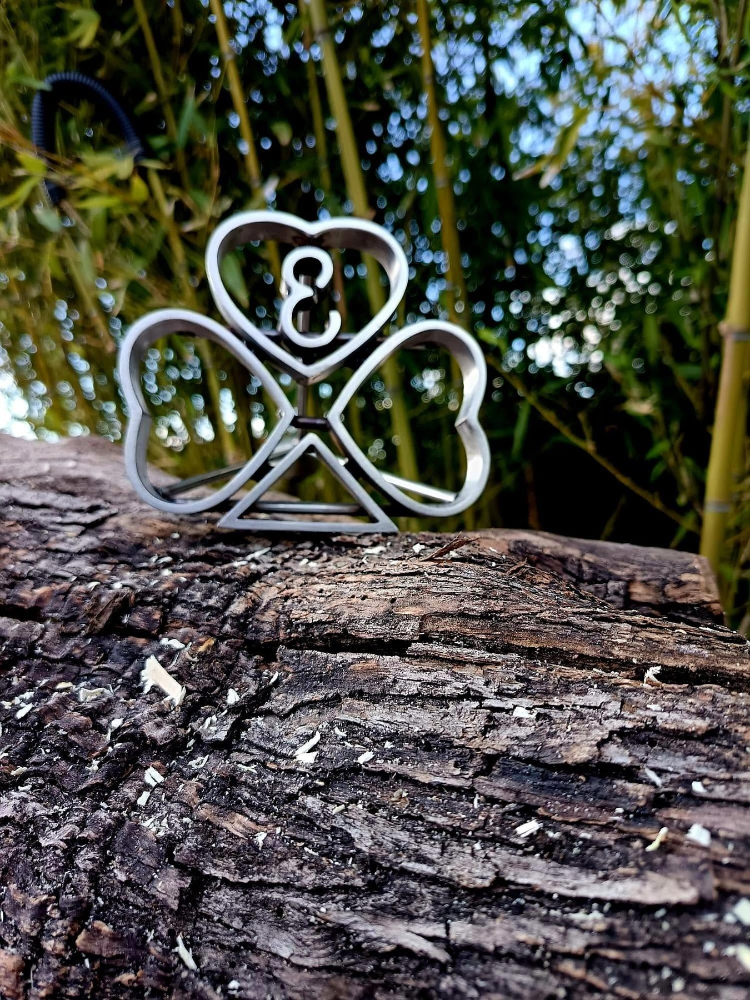
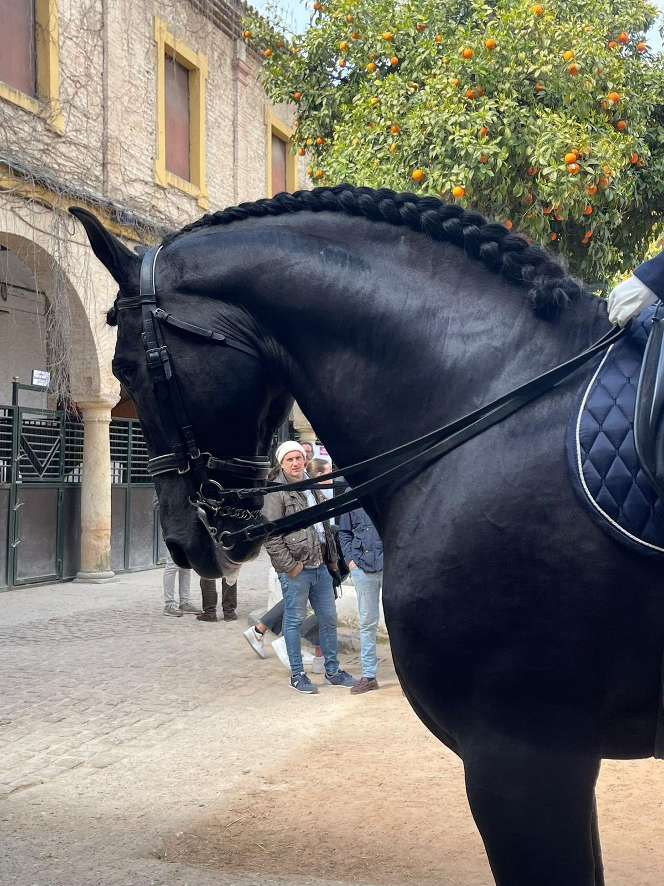
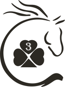

Una ganadería familiar de Pura Raza Española en la sierra de Córdoba.
Yeguada Tres Tréboles nace de la afición de Pedro Navarro, vinculado al mundo del caballo desde niño. Durante años esa afición se limitó a tener caballos de montura en casa; con el tiempo derivó en un proyecto de cría en el que hoy participa toda la familia.
La cría comenzó con Provinciano SM III, el semental sobre el que se ha construido la línea de la casa. A él siguieron Nerva Navero y NR Malusa, las dos primeras yeguas de vientre, y más adelante Faraona MFE, procedente de la ganadería de María Fernanda de la Escalera.
La yeguada la compone en la actualidad una veintena de ejemplares de Pura Raza Española, todos inscritos en el Libro Genealógico de la raza, buena parte de ellos nacidos aquí.


"Yo he sido siempre aficionado al caballo, tengo tres niños, por eso la ganadería se llama Tres Tréboles."
El sueño era de Pedro, pero el nombre es de ellos. Y a estas alturas los caballos ya son de todos. Por eso esto no es un negocio de paso, sino algo que queremos que dure.
De ahí sale el hierro: una hoja por cada hijo, en forma de corazón, y el tres en el centro. Es el hierro con el que la yeguada figura en el Libro Genealógico.
Conviven en la yeguada y se complementan: una sostiene el día a día, la otra nos permite llegar más lejos.
Cubrición al natural a nuestras yeguas, unas veces con Provinciano y otras con sementales de élite de la raza. Cada año hay que decidir qué yegua va con cuál, y es la decisión que marca cómo será la yeguada dentro de cinco años: se mira la morfología, el movimiento y qué puede aportar cada cruce. Y la capa, que para nosotros no es un detalle.
Los potros que salen de estos cruces nacen y se crían aquí, en la sierra.
De nuestras mejores yeguas extraemos embriones que gesta una yegua receptora. Suele asociarse a las ganaderías grandes, pero es justo al revés:
"Para cualquier ganadero pequeñito es una manera de mejorar mucho la calidad de su yeguada, recortar años."
El programa TodoCaballo vino hasta la sierra para conocer la yeguada, ver una transferencia de embriones y salir a dar un paseo a caballo con nosotros.
TodoCaballo · Canal Sur · marzo de 2026
"Hemos intentado apostar por la capa castaña y la negra, que es lo que siempre me ha gustado."
No es casualidad: son las dos capas hacia las que dirigimos los cruces. La castaña es la más frecuente en la yeguada y la negra aparece con regularidad, unas veces por parte de padre y otras de madre.

Foto: Salvador Giménez Fotografía
Yeguada Tres Tréboles nace con la ilusión de criar y disfrutar del Pura Raza Española, cuidando cada ejemplar y construyendo nuestro proyecto paso a paso.
Todos nuestros ejemplares están inscritos en el Libro Genealógico del caballo de Pura Raza Española. En la ficha de cada caballo puedes ver su carta genealógica.
En pleno corazón de la sierra de Córdoba, en la zona de Santa María de Trassierra, entre encinas y caminos. Los caballos viven donde vivimos nosotros.
Se visita con cita previa. Si quieres conocer la yeguada, escríbenos.
Cómo llegar →Estaremos encantados de enseñarte la yeguada y nuestros caballos.